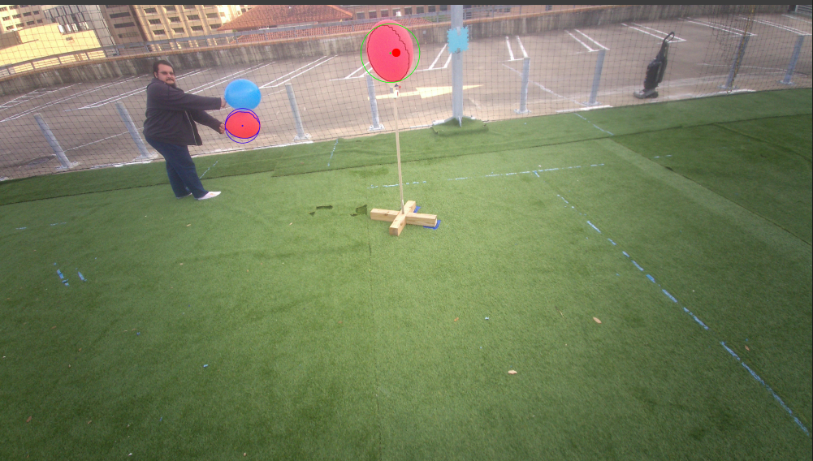
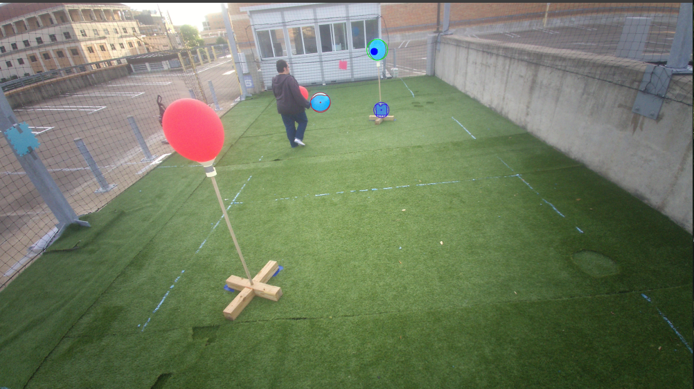

AUTONOMOUS SYSTEMS
Aerial Robotics Competition System
A semester-long quadrotor autonomy project that built up from simulation and controls to a final ROS-based tournament system.
Overview
Aerial Robotics was one of the most complete robotics projects I worked on because it was not just one assignment. The class slowly built up the pieces of a quadrotor autonomy stack: dynamics, control, sensor simulation, state estimation, path planning, trajectory generation, computer vision, and 3D localization.
The final tournament was where all of that work actually mattered. Our team had to run an autonomous navigation system in ROS and also complete a separate computer vision challenge with false balloon-like objects in the images. We placed 4th overall in the class.
Big Picture
The main thing I took away from this project is that autonomy is not just one algorithm. Planning, controls, estimation, and perception all have to work together, and the final tournament made that really obvious.
How the Class Built Up to the Final Tournament
The reason this project is worth showing is because the final system did not come out of nowhere. Each lab added another layer of the autonomy stack, and by the end we had enough tools to build a real tournament solution instead of just isolated demos.
Quadrotor Dynamics
Built a MATLAB quadrotor simulator using Newton-Euler rigid body dynamics, rotation matrices, rotor thrust, and motor torque models.
Control & Higher-Fidelity Simulation
Added aerodynamic drag, first-order motor dynamics, and a two-layer controller for trajectory tracking and attitude control.
State Estimation
Simulated GNSS, camera, and IMU measurements, then used a UKF so the controller could run off estimated state instead of perfect truth data.
Planning & Trajectories
Implemented DFS, Dijkstra, and A* in C++, then used polynomial trajectory generation to turn discrete paths into smooth commands.
Computer Vision
Used OpenCV to detect colored balloons and estimate 3D target locations from multiple camera measurements and known camera poses.
Final Integration
Brought the pieces together for a final tournament with autonomous navigation, target interaction, landing, and robust vision testing.
Final Tournament Challenge
The final tournament had two main parts. The first was the autonomous navigation side, where the quadrotor had to plan through the environment, pop target balloons, and land. The second was the vision test, where the goal was to identify real balloon targets even when the images included false balloon-like objects.
I like this project because it made the difference between “an algorithm works” and “the whole system works” really clear. A planner can find a path, but that path still has to be turned into something the quad can actually fly. A detector can find colored blobs, but bad detections can still ruin the final 3D estimate if the estimator is not robust.
Autonomous Navigation Demo
This video shows the navigation side of the final tournament running in ROS. It shows the A* path, the pruning behavior, the quadrotor moving through the mission, popping target balloons, and landing at the end. This is the best visual summary of the integrated navigation system.
Final ROS simulation showing A* path planning, path pruning, target balloon interactions, and autonomous landing during the navigation portion of the tournament.
Autonomy Architecture
Our final navigation approach was organized around separate planning layers. The mission planner handled the overall target order, the global planner generated a path through the environment, and the local planner worked on the active trajectory that would be passed to the autonomy protocol.
This structure was more than what the simplest version of the tournament needed, but it made the system easier to reason about. It also gave us a cleaner way to think about replanning, pruning, and handling changes in the environment.

Final autonomy architecture showing how mission planning, global planning, local planning, monitoring, and the student autonomy protocol connected during the tournament.
Vision Test & False Balloons
The vision test was separate from the navigation system. It was not about flying the path. It was about taking image measurements, detecting the target balloons, and estimating their 3D locations. The hard part was that the images included false balloon-like objects that could pass the early color filtering.
This is where RANSAC became useful. The original pipeline could estimate a 3D location from detections, but if false detections made it into the measurement set, the final estimate could get pulled away from the real balloon. RANSAC helped by looking for a consistent set of measurements and rejecting outliers before the final 3D estimate was computed.

Difficult red-balloon detection case. The detector found the real target, but also picked up false balloon-like objects that could hurt localization.

Difficult blue-balloon detection case. These false positives were the reason robust outlier rejection mattered.
Why RANSAC Mattered
The detector was not the whole problem. Even if the color filtering found the balloon, it could also find extra objects that looked close enough to pass the early checks. RANSAC made the final localization step less sensitive to those bad measurements.
What I Worked On
My strongest individual contribution was on the vision side of the final tournament. I worked on adapting the balloon localization pipeline so it could handle false positives better, especially in the difficult red and blue detection cases.
- Implemented and tuned RANSAC-based outlier rejection for the 3D structure computation pipeline.
- Worked with the OpenCV balloon detection output and helped make the final localization more robust to false detections.
- Built experience throughout the course with quadrotor simulation, controls, state estimation, planning, trajectory generation, and computer vision.
- Contributed to the final integrated tournament system that placed 4th overall in the class.
Results & Validation
The final result was a system that demonstrated both autonomous navigation and robust perception. The ROS simulation showed the navigation system executing the mission, while the vision test showed why robust estimation was needed when the detector saw false targets.
Our team placed 4th overall in the class. For me, the most important result was that the final project connected the full stack: the same class that started with dynamics equations ended with a tournament where planning, controls, estimation, and vision all had to matter at the same time.
Key Result
Built up a quadrotor autonomy stack across the semester and applied it in a final ROS-based tournament system. Our team placed 4th overall, and my main contribution was improving the vision pipeline with RANSAC-based outlier rejection for false-balloon cases.
Tools Used
MATLAB, C++, ROS, RViz, OpenCV, RANSAC, A*, Dijkstra, DFS, UKF state estimation, quadrotor dynamics, feedback control, polynomial trajectory generation, computer vision, 3D localization
Engineering Takeaways
This project helped me understand why robotics gets complicated fast. It is easy to talk about planning, control, estimation, or vision separately, but the real challenge is making those pieces work together. A path has to be flyable. A trajectory has to be trackable. A detection has to be reliable enough to localize. If one part is weak, the whole system feels it.
The final tournament made the class feel much more real. It was not just about getting a lab plot to look right. It was about building enough of the stack that the quadrotor could complete a mission and the vision system could handle messy images. That is what made this one of the projects I learned the most from.